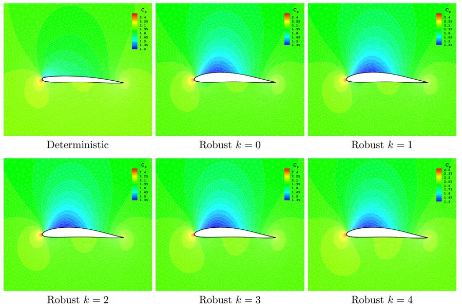

← Publications Conference paper 2014
Robust Optimizations of Structural and Aerodynamic Designs
15th AIAA/ISSMO Multidisciplinary Analysis and Optimization Conference, Atlanta, Georgia, June 2014
This paper demonstrates the use of polynomial chaos and kriging surrogate models, which are enhanced with a dynamic training point selection framework, for the propagation of mixed epistemic and aleatory uncertainties in robust optimization problems. The selection of training points for the two surrogate models is guided by local surrogate models (multivariate interpolation and regression) which are built using a subset of the available training data. The aleatory uncertainties are propagated via extensive sampling of the surrogate models, whereas the epistemic uncertainties are propagated using a box-constrained optimization approach. Robust optimizations are demonstrated for two structural and one aerodynamic test problem. The structural test cases include designing a three-bar truss and a cantilever beam, whereas the aerodynamic test case involves the robust lift-constrained drag minimization of an airfoil under transonic flow conditions.